021
Paseo 멀티 AI 오케스트레이션 분석
Mac·Windows 설치부터 Claude Code·Codex·Hermes 등 여러 AI 에이전트를 하나의 작업 흐름으로 연결하는 Paseo의 핵심 개념, 보안과 도입 판단을 비전공자 임원 관점에서 정리했습니다.
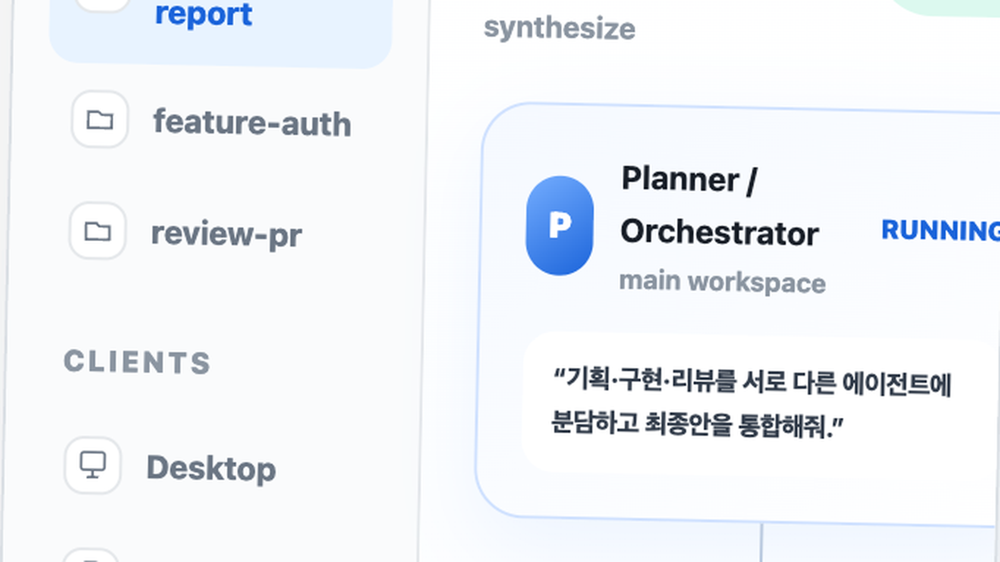
원자료를 조사하고 사실과 해석을 나눠 기록하는 개인 보고서 아카이브입니다.
원하는 기업·제품·이슈를 남겨 주세요. 검토할 가치가 있는 주제는 다음 리포트 후보로 반영합니다.
총 21개의 글
Mac·Windows 설치부터 Claude Code·Codex·Hermes 등 여러 AI 에이전트를 하나의 작업 흐름으로 연결하는 Paseo의 핵심 개념, 보안과 도입 판단을 비전공자 임원 관점에서 정리했습니다.

개인 업무는 Plus($20/월)가 기본 후보이고, 매일 고강도 코딩을 지속하면 Pro의 5배·20배 사용량을 검토합니다. 조직은 Business의 사용자당 요금과 별도 크레딧을 분리해 예산화해야 하며, 서비스에 모델을 붙이는 API 비용은 어떤 ChatGPT 구독에도 포함되지 않습니다.
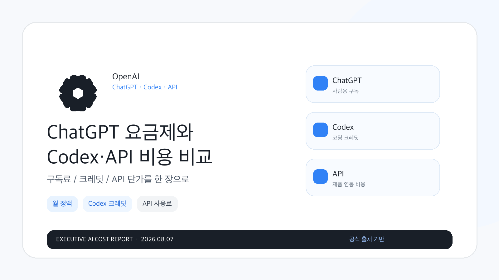
Mac-first 앱 출시, Apple Silicon 통합 메모리, 로컬 LLM RAM 설계, MLX·Ollama·LM Studio 생태계 관점에서 Mac이 AI에 유리한 이유를 분석했습니다.
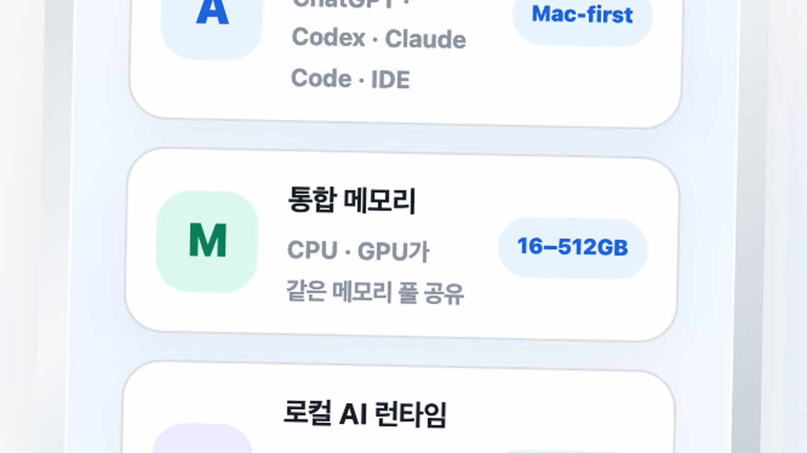
비전공자 관점에서 『AI 에이전트 생태계』와 『AI 에이전트 실행 세계 1·2』의 구매 적합성, 난이도, 읽는 순서를 비교한 구매 전 도서 리뷰입니다.
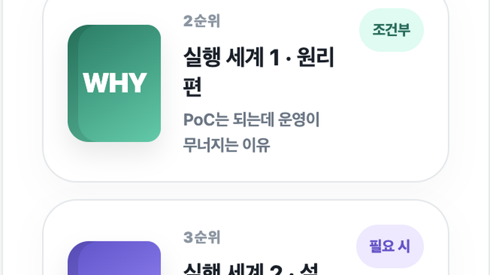
복잡한 AI 지식관리 구조를 임원 관점에서 한눈에 이해하도록 정리한 설명 자료입니다.
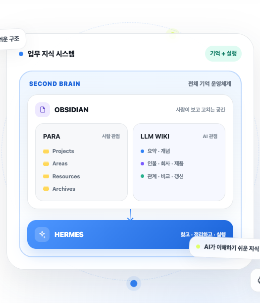
팔란티어는 생성형 AI 모델을 직접 만드는 회사라기보다, 정부와 기업이 보유한 복잡한 데이터를 실제 업무·작전·생산·의사결정에 연결하는 운영형 AI 플랫폼 회사입니다. 경쟁사가 없는 것은 아니지만, 데이터 의미 구조인 Ontology, 고보안 환경 배포 경험, AIP를 빠르게 현장에 적용하는 배포 방식이 차별점입니다. 주가는 AI 성장 기대를 강하게 반영하고 있어 사업 성장은 인상적이지만 가격 부담과 기대치도 함께 봐야 합니다.
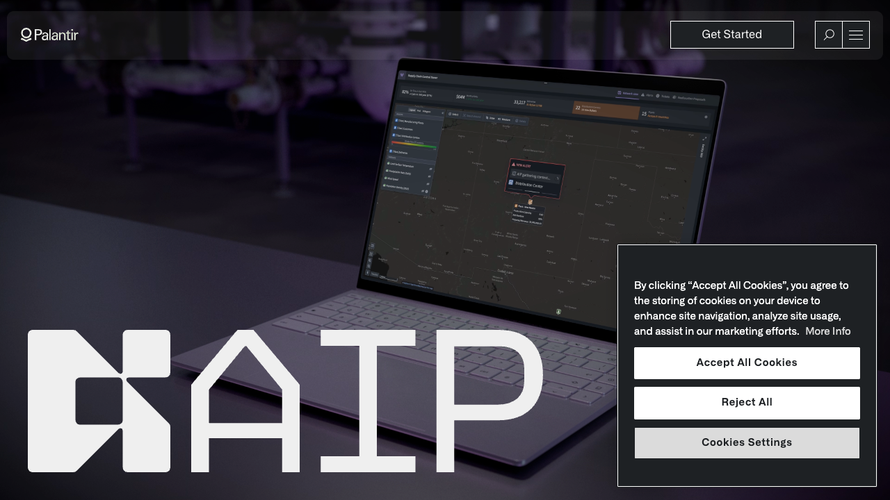
비전공자 관점에서 유리 코어·TGV 제조, 유기·실리콘 비교, 글로벌·한국 공급망, 기업 상용화 단계와 2035년 시장 시나리오를 분석했습니다.
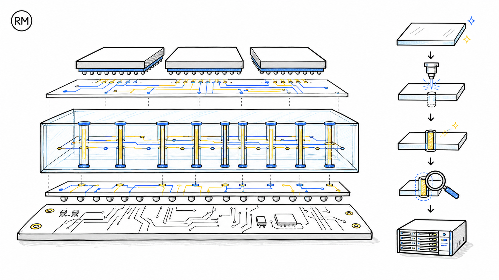
한국 라이선스, 모델 조합별 메모리, Apple Silicon MPS 위험, ComfyUI API·로컬 사용법을 비전공자 관점에서 검증했습니다.
성인 4명과 7살 아이 2명을 기준으로 공식 호텔 2곳, 3박+1박 숙박안, 파크 2일과 도심 일정, 비용·예약 리스크를 분석했습니다.
Hermes·Obsidian·LLM Wiki로 상담 메모를 기록·할 일·메시지 초안으로 바꾸는 최소 흐름과 개인정보 경계, 1·4·12주 실행안을 설명합니다.
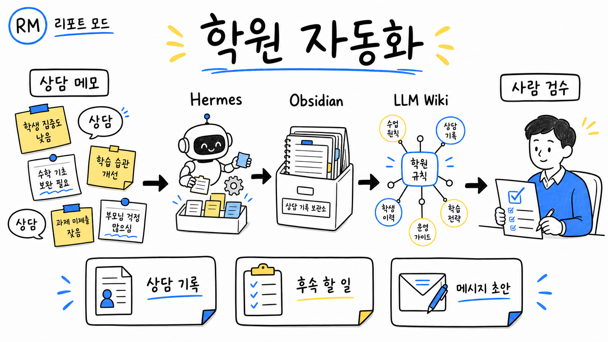
GPT-5.6 Sol과 내부 연구 모델의 평가 중 발생한 실제 플랫폼 침해를 타임라인·공격 경로·용어·대응으로 쉽게 설명했습니다.
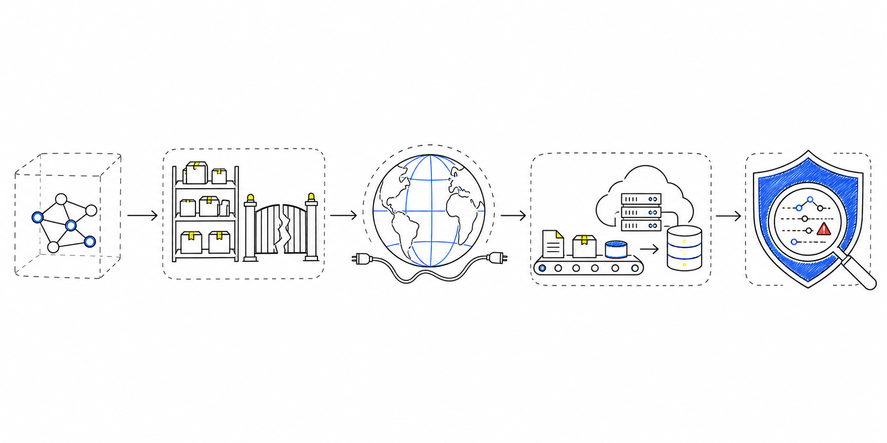
현재가 대비 800만원의 가격 잠금, 6인승 효용, 보조금·금융·감가·인도 품질을 출고와 미출고 기준으로 분석했습니다.

V4 Flash는 대량 에이전트·코딩 초벌에서 비용 혁신 후보지만, 고위험 업무는 상위 모델 또는 사람의 교차 검수가 필요합니다.
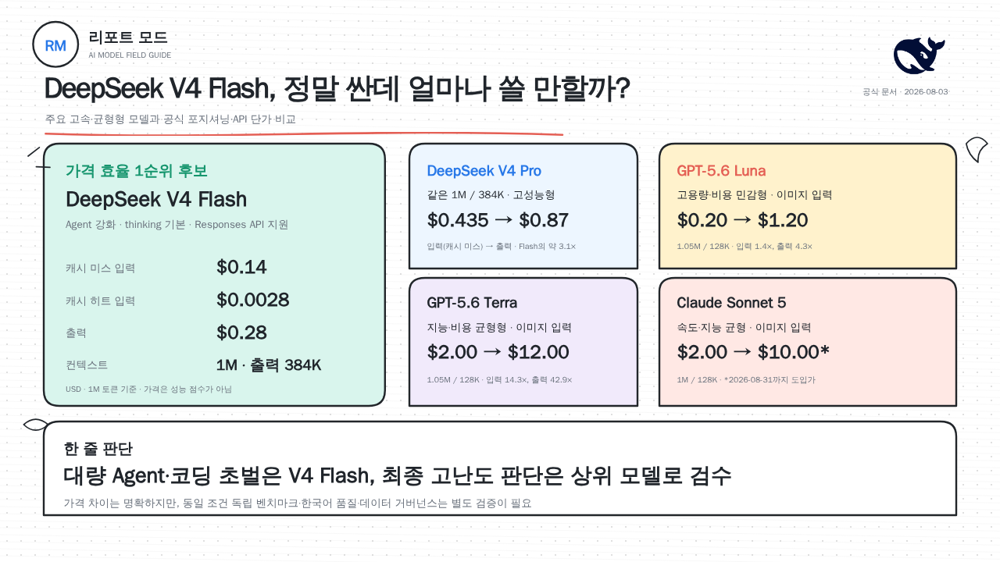
31개 실질 체험시설과 퍼레이드·야간쇼를 전수 분석하고, 9–10월 날짜 구간 및 연중 월별 상대 혼잡도를 비교했습니다.
실제 양자화 파일과 M5 Max MLX 실측을 바탕으로 종합·코딩·속도·실험용 최적 모델을 구분했습니다.

Buzz는 사람과 AI 에이전트가 대화·코드·워크플로를 함께 다루는 개발자 중심 작업공간입니다. 기존 메신저를 바로 교체하기보다 작은 개발 프로젝트로 시험하는 편이 안전합니다.
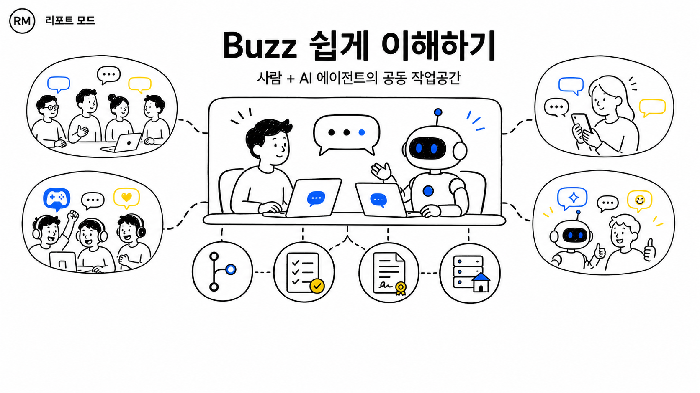
흥행의 핵심은 포켓몬 수집을 서식지·건설·관계 형성으로 재해석한 데 있으며, 느린 진행을 받아들일 수 있을 때 강력 추천합니다.
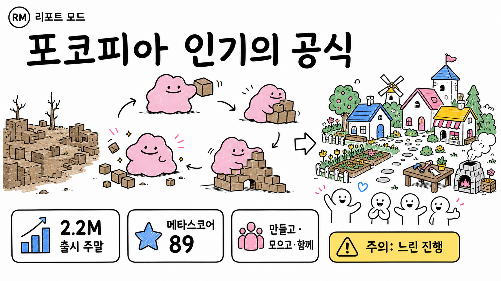
개인 AI 운영체제는 Hermes, 다채널·다기기 허브는 OpenClaw, 코드 작업은 Codex가 각각 가장 강합니다.
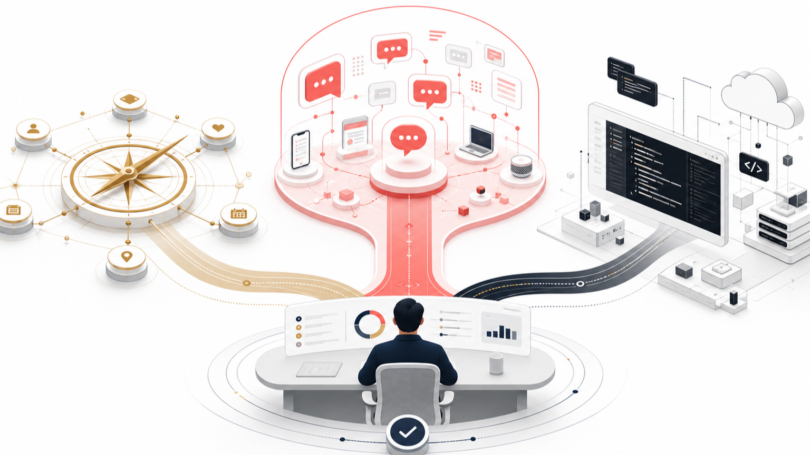
현재 실측 선두는 Fold8 Ultra입니다. iPhone Fold는 Apple 공식 발표 전이라 기다림의 가치만 비교했습니다.
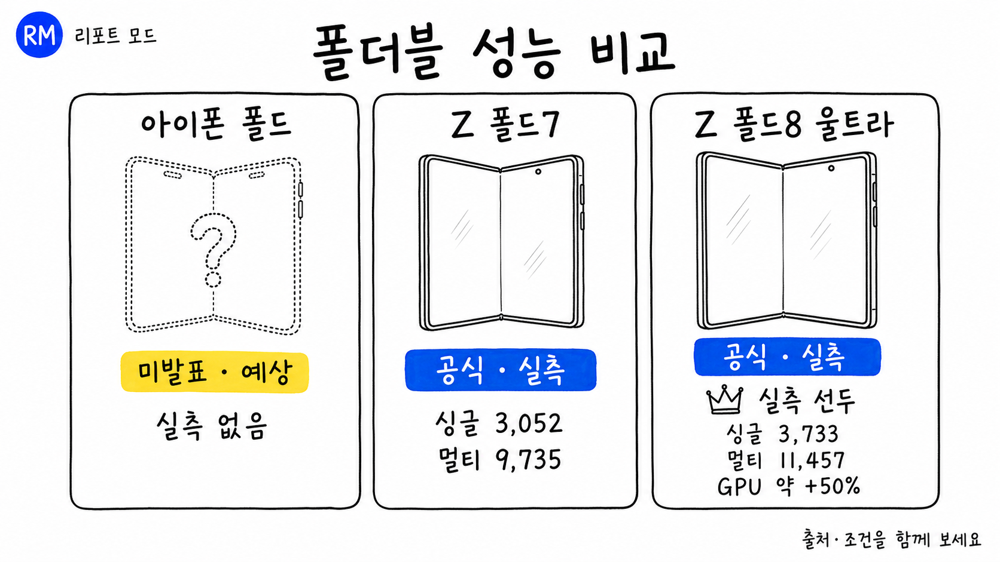
더 가볍고 오래 가는 소형 폴드. 화면·카메라·S Pen의 양보까지 감수할 가치는 사용 목적이 결정합니다.
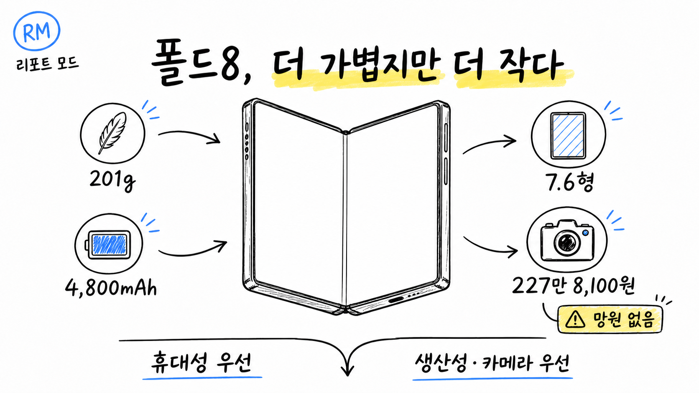
1세대 혁신성은 높지만, 구매는 실측 검증 뒤가 맞습니다.
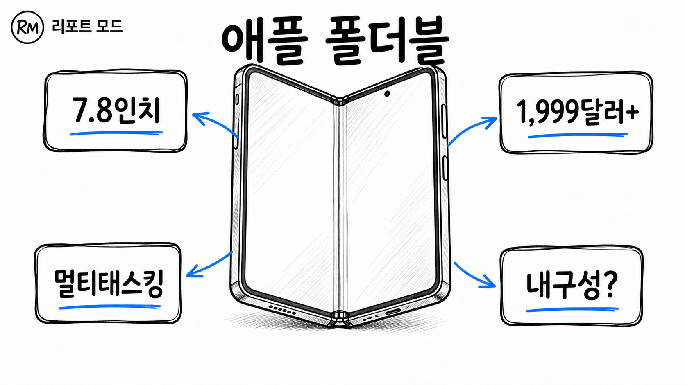
검색어나 카테고리를 바꿔보세요.